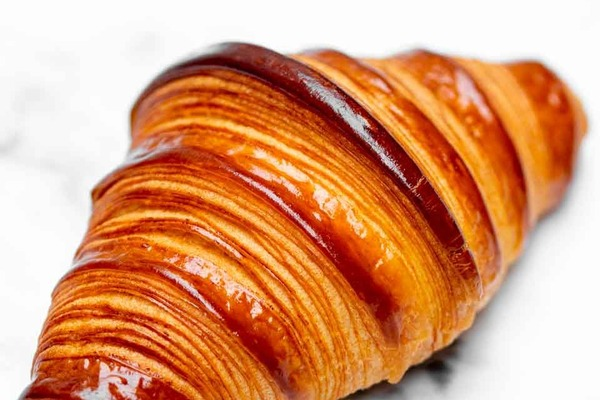

Уютная пекарня, где каждое утро рождаются ароматные, хрустящие круассаны по традиционным французским рецептам. Мы используем только натуральные ингредиенты: сливочное масло, отборную муку и свежие яйца. Наши пекари замешивают тесто вручную и выпекают круассаны небольшими партиями, чтобы сохранить неповторимый вкус и текстуру.
Классический круассан — наш эталон качества: хрустящая корочка и нежные слои внутри.
